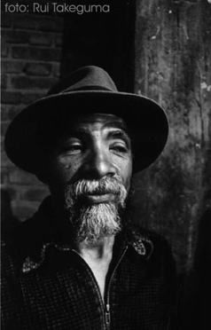
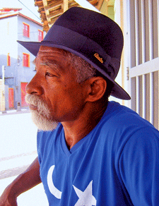
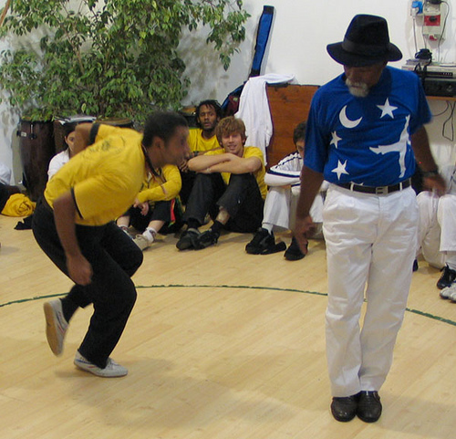
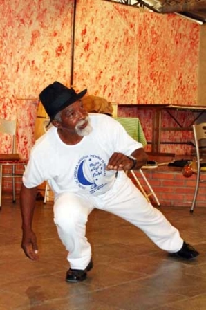

Mestre Lua de Bobó
Mestre Lua de Bobó

Edvaldo Borges da Cruz — Местре Луа ди Бобо (Lua de Bobó), родился в Arembepe (пригород Сальвадора), в 1950 году. В раннем детстве вместе с матерью Dona Maria Borges da Cruz,переехал в Сальвадор, район Engomadeira.
В 15 лет друг Bel познакомил Эдвалдо с Mestre Bobó (Sr. Milton Santos). После этого тренировался на грунтовом дворе в районе Pequeno do Tororó в Сальвадоре, Байя,в Academia de Capoeira Angola Cinco Estrelas.

Через эту академию прошло множество капоэйристов, помимо известных и почетных гостей и посетителей.
Более 20 лет занимался в академии своего мастера. Поначалу его называли “Olhar para Lua” (Глядя на Луну), но со временем Эдвалдо получил известность в среде баиянских капоэристов, как Lua de Bobó. В 1987 году, в клубе Васко да Гама в Dique do Tororó, официально получает степень местре от местре Бобо.
Позднее, начав преподавать в родном Arembepe, Луа ди Бобо основывает группу Grupo de Capoeira Angola Menino de Arembepe (GCAMA). Также даёт уроки в Сальвадоре в «Clube de Regatas Vasco da Gama», в Dique do Tororó.
В 1987 году мастер начинает традицию проведения ежегодной встречи капоэйристов, в январе — месяце своего и рождения и основания группы.

Воспитал двух мастеров, Eliseu Valverde из Сальвадора (в настоящее время не проявляет активности в капоэйре) и José de Almeida — Mestre Zequinha из Escola Raiz de Angola de Piracicaba (Сан-Паулу).
Местре Луа передает свои знания Капоэйра Ангола своим трём детям: Эри, Ари и Тайане (Eri, Ari,Taiana), с детства участвовавших в тренировках местре. Мастер гордится тем, что сегодня они становятся хранителями традиций, лидерами группы, поддерживающими Мастера во всех его начинаниях, настоящими капоэйристами.
В 1990 году состоялась его первая поездка за границу, когда он продемонстрировал свое искусство в Атланте. Это было первой из многих поездок за границу в будущем, в которых люди отдавали должное его таланту.

В девяностые годы, после длительного периода серьёзной болезни, умер Местре Бобо в возрасте 65 лет.
В 2001 году Местре Луа стал техническим директором Associação Brasileira de Capoeira Angola, Salvador.
По целому ряду причин, мастер оставляет Dique do Tororó в 2001 году, и начинает строить академию группы на семейной земле в Arembepe. Таким образом, оставшись временно без места для преподавания, больше путешествует по Бразилии и за рубеж, неся и передавая энергию Капоэйра Ангола. В 2005 году открывает свою академию на ежегодной встрече, представляя центр своей группы GCAMA.
Téman Gvozd ,2012 для capoeira.in